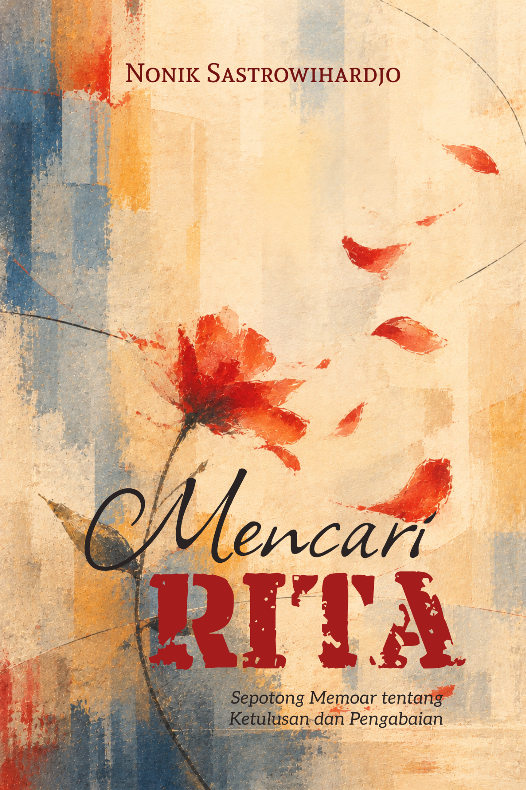

Praktis & digital
E-Book
Baca dari perangkat pilihanmu, kapan saja dan di mana saja.
Harga mulai dari
Rp25.000
Pesan E-Book
Sebuah memoar oleh Nonik Sastrowihardjo
Sepotong Memoar tentang
Ketulusan dan Pengabaian
Air mata Bapakku sebelum berpulang akan selamanya menjadi kenangan yang menyakitkan. Mamakku, yang duduk diam menatap siang berganti sore, hingga kini masih menanti seseorang akan datang.
Temukan bukunyaTersedia dalam format e-book dan buku cetak.

Tentang buku
Seorang perempuan muda keturunan Tionghoa, namanya Rita.
Pada suatu sore tahun 1997, ia dan kekasihnya datang ke rumah kami meminta pertolongan.
Sejak hari itu, Bapak menerima mereka menjadi bagian keluarga.
Sayangnya, ketulusan hati Bapak dibalas pengabaian yang menyakitkan.
Kisah ini kutulis untuk melembutkan hati Rita yang telah memilih pergi. Semoga kisah ini sampai padanya.
Setiap keluarga menyimpan kisahnya
masing-masing.
Ada yang tak diceritakan dan
perlahan mengendap menjadi kenangan.
Ada pula
kisah yang dibagikan untuk diambil pelajaran.
Aku
memilih yang terakhir.
Pilih format bacaan
Pilih format yang paling nyaman untukmu.
Baca dari perangkat pilihanmu, kapan saja dan di mana saja.
Nikmati pengalaman membaca buku dalam bentuk fisik.
Harga yang tercantum adalah harga minimum. Harga akhir dapat mengikuti varian atau pilihan pemesanan.
Informasi pemesanan
E-book merupakan versi digital yang dibaca melalui perangkat elektronik. Buku cetak merupakan edisi fisik.
Harga yang ditampilkan adalah harga minimum. Silakan ikuti detail harga pada halaman checkout untuk mengetahui total pesanan.
Pilih format yang diinginkan, lalu tekan tombol pesan. Kamu akan diarahkan ke halaman pemesanan setelah tautan checkout diatur oleh penerbit.
Pemesanan buku cetak
Isi data berikut. Setelah dikirim, WhatsApp akan terbuka dengan pesan pemesanan yang sudah disiapkan.